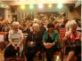
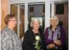
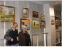
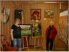
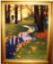
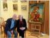
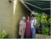
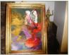

Aktualności
17/10/2013 Wystawa “Estrady” w
Bibliotece Publicznej na Bielanach. .
Bozena wystawia 3 gobeliny.
17/11/2013 Wystawa w DK Zacisze.
Bozena wystawia 5 gobelinow, w tym
jeden nie ukonczony. Mialo byc 6 , ale
ten szosty jest jeszcze na wystawie na
Bielanach.


2/06/2014 Wystawa “Estrady” w
Bielanskim Osrodku Kultury Bozena
wystawia 3 obrazki: Kamienie, Snopki i
Zlota Jesien. Osobiscie nie
uczestniczy, z powodu wyjazdu do Chin
i USA.
Recenzja: Prace Sekcji tkactwa
artystycznego Bielańskiego Ośrodka
Kultury już dawno wyszły poza ramy
tzw. prac amatorskich, są to gobeliny o
wysokim poziomie artystycznym, z
przemyślaną koncepcją budowy
obrazu, fakturą i tematyką.
25/05/2015 DK Kadr Gobelin Roku 2015 -
WYGRALISMY (prawie)
85 uczestnikow 106 prac.
Dwie II nagrody po 200 zl.w tym
Bozena Majewska za “Struga w lesie”
za doskonaly warsztat, subtelna
kolorystyke i walory malarskie.
21/10/2014 Wystawa DK Zacisze w
Starostwie Targowek.
Temat “Warszawa”. Gral, spiewal i
tanczyl zespol Sztajerek ( np.o Cecylii.
ktorej skradli calusa) .Bozeny obrazki
to Politechnika i Krakowskie
Przedmiescie“. Jak zwykle
najladniejsze.
8/04/2015 Wystawa w Mediateka eda
wisialy caly miesiac. Bozena pokazuje
6 swoich prac z roznych okresow
tworczosci. No i Gosc Honorowy

14/05/2015 Wystawa w Estrady 112
VI Przeglad Gobelinow Artystyczne Pasje
2015.Do konkursu zgloszono 71 prac z 9
osrodkow kultury w Warszawie Bozena,jako
jedyna zglosila 2 prace ,bo nalezy do 2
osrodkow. Nie dostalismy nagrody,bo podo-
bno prawdziwy gobelin nie powinien byc
oprawiony. (nie znaja sie)



Rok 2016 - Bozeny prace uczestnicza w kilku
wystawach.
-marzec, Zacisze Kwiaty w wazonie
- maj, Estrady Wedrowiec i Motylem jestesmy
- czerwiec, Estrady: Wedrowiec,
Kwiaty w Wazonie,
Motylem jestem,Jeziorko
Chabry
Rok 2017 - Znowu Bozeny prace uczestnicza w kilku
wystawach.
-marzec, Pomiechowek: Motylem..,Plaza ( Kochaś?),
snopki, zimowy domek
-maj Estrady: Motylem jestem (WYROZNIENIE) ,Plaza
-czerwiec Estrady: Kamienie, Plaza, Domek, Wisnie, Snopki,
Chabry,(Pani sie uparla zeby Bozena sprzedala)
Motylem, Jeziorko + pozegnalne (niestety) zdjecie z Pania
Marzena.


-pazdziernik Bydgoszcz: Ogolnopolski Przeglad Amatorskiej
Tkaniny Unikatowej : Kamienie ( chyba wiecej tam nie poje-
dziemy).
{kind=link}
{kind=link}
{kind=link}
{kind=link}
{kind=link}
{kind=link}
{kind=link}
{kind=link}
{kind=link}